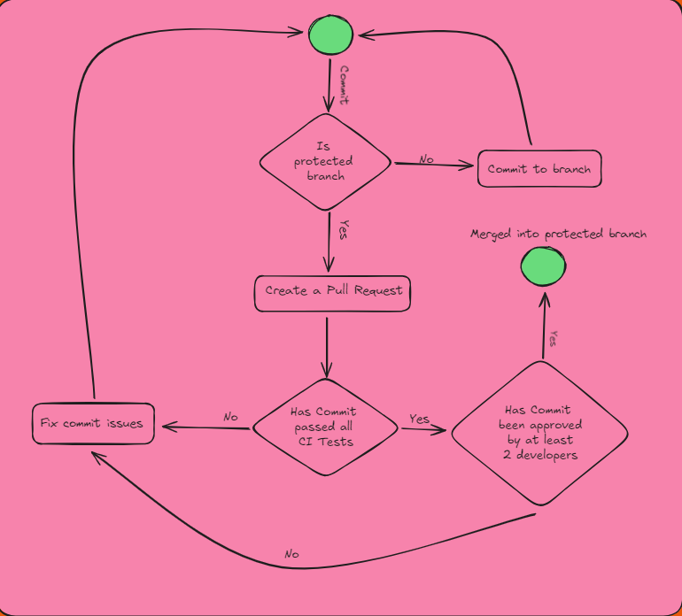

Github
Overview
Git is a distributed version control system that allows multiple developers to work on a project simultaneously without overwriting each other's changes. It keeps track of every modification to the project's files, enabling you to revert to previous versions if necessary. Git is essential for collaborative software development as it provides a structured way to manage and merge contributions from different team members, ensuring the project's integrity.
GitHub is an online platform that hosts Git repositories, offering a web-based interface for managing Git projects. It facilitates collaboration by allowing developers to share their repositories, review code, track issues, and deploy applications. GitHub also provides tools for continuous integration and deployment, making it an invaluable resource for modern software development.
Using Git and GitHub in coding projects ensures a well-organized workflow, where changes are documented, collaboration is streamlined, and the project history is preserved, which is crucial for both development and maintenance.
Git Management
Effective Git management involves several key practices to maintain a clean and efficient workflow. These include:
-
Branching Strategy: Implementing a branching strategy (such as GitFlow or Feature Branching) ensures that development, testing, and deployment processes are well-organized. For example, keeping the main branch stable while using feature branches for new developments helps maintain the project's integrity.
-
Commit Practices: Writing clear and concise commit messages, and committing changes frequently with meaningful descriptions, makes it easier to understand the project's history and roll back changes if needed.
-
Merge and Pull Requests: Regularly merging branches and using pull requests to review and discuss changes before integrating them into the main branch is essential for maintaining code quality and preventing conflicts.
By adhering to these Git management practices, teams can ensure that their project remains organized, scalable, and easy to maintain throughout its lifecycle.
FSD General Git Management
The repository exists of multiple branches that have been created for testing, bug fixes, and individual development. This allows the team to develop in parallel. The repository also has a main branch and a main staging branch. Both of these branches are considered "production" ready branches. The staging branch is a buffer for the commits before they are moved into the main branch.
The general git workflow for the backend system can be analyzed in the git workflow diagram but on a high level the workflow is as follows:
- 2 protected branches ( main, main_staging )
- These branches have branch rules that restrict commits being pushed without a PR.
- When creating a PR into the protected branch, the commit will run through a CI pipeline and automatically formats the code, suggests changes and checks for errors through static type checking and pytests
- If an error occurs during the CI pipeline, the PR is rejected until the issues are fixed.
- Developers can commit normally to any other branches
Git Workflow Visualized

The image above illustrates the general workflow for committing changes to the repository. Starting from the green circle, the process unfolds as follows:
- A developer makes a commit.
- Is the branch a protected branch?
- If not protected, the developer can continue committing directly to the branch.
- If protected, the commit cannot be pushed directly; a pull request (PR) is required.
- The developer must create a PR if the branch is protected.
- Once the PR is created, it is automatically run through a Continuous Integration (CI) pipeline that includes code tests and linting checks.
- If the PR fails the CI checks, the developer is notified of the failure and must address the issues, starting the process again from the green circle.
- If the PR passes the CI checks, it proceeds to the review stage, where it must be approved by at least two developers.
- If any reviewer rejects the PR, the developer must resolve the issues and restart the process from the green circle.
- If all reviewers approve the PR, the code is merged into the protected branch.
CI Pipeline
The Continuous Integration (CI) pipeline is a crucial part of our development process, ensuring that code changes meet our project's quality standards before they are merged into the main branch. The CI pipeline is automatically triggered when a developer pushes code to the main branch or creates a pull request targeting the main branch. The pipeline consists of several stages:
-
Setting up the Environment: The pipeline runs on the latest version of Ubuntu and uses Python 3.9.13. It checks out the repository code and installs the necessary dependencies, including tools like Flake8, Pytest, Black, and MyPy.
-
Code Linting with Flake8: This step checks the code for syntax errors and enforces Python coding standards. If any issues are found, the pipeline fails, prompting the developer to fix them.
-
Code Formatting with Black: The Black tool checks that the code adheres to our project's formatting guidelines. If the code isn't properly formatted, the pipeline fails, and the developer must reformat their code.
-
Type Checking with MyPy: This step ensures that the code is type-safe by running MyPy, a static type checker. This helps catch potential bugs that could arise from type mismatches.
-
Testing with Pytest: Finally, the pipeline runs our test suite using Pytest. All tests must pass for the pipeline to succeed, ensuring that the code is functional and that existing features haven't been broken by the new changes.
If any stage of the CI pipeline fails, the pull request is rejected, and the developer must resolve the issues before resubmitting. This automated process helps maintain high code quality and prevents problematic code from being merged into the main branch.
Below is our CI yaml that initializes our pipeline:
name: Python application
on:
push:
branches: [ "main" ]
pull_request:
branches: [ "main" ]
permission:
contents: read
jobs:
build:
runs-on: ubuntu-latest
steps:
- uses: actions/checkout@v4
- name: Set Up Python 3.9.13
uses: actions/setup-python@V3
with:
python-version: "3.9.13"
- name: Install dependencies
run: |
python -m pip install --upgrade pip
pip install flake8 pytest black mypy
if [ -f requirements.txt ]; then pip install -r requirements.txt; fi
- name: Lint with flake8
run: |
# stop the build if there are Python syntax errors or undefined names
flake8 . --count --select=E9,F63,F7,F82 --show-source --statistics
# exit-zero treats all errors as warnings. The GitHub editor is 127 chars wide
flake8 . --count --exit-zero --max-complexity=10 --max-line-length=127 --statistics
- name: Check code formatting with Black
run: |
black --check .
- name: Type check with MyPy
run: |
mypy .
- name: Test with pytest
run: |
pytest -v